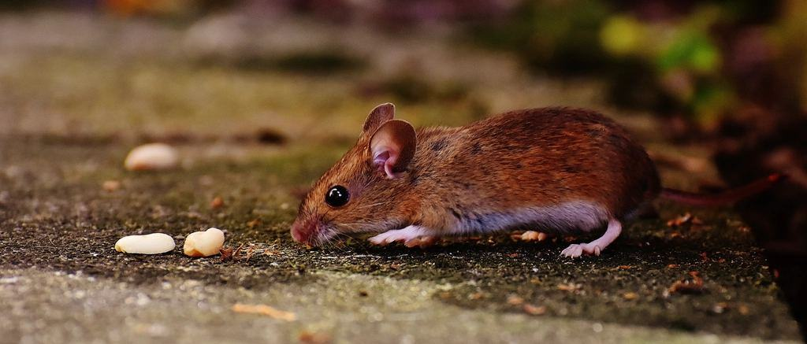

Om Wessel & Co
Henrik Wessel startade företaget 1999 efter tio år som tekniker i ett av de stora rikstäckande bolagen. Han hade märkt att kunderna på Särö och i Örgryte inte ville ha en lackerad skåpbil med råttor på dörren utanför huset – och att hotellen behövde någon som kunde komma klockan fyra på morgonen utan att väcka gästerna.
Omärkta bilar, tekniker i mörk kavaj och en personlig kontakt som svarar direkt – för hem, hotell och krogar där ingen får märka något.
Henrik Wessel startade företaget 1999 efter tio år som tekniker i ett av de stora rikstäckande bolagen. Han hade märkt att kunderna på Särö och i Örgryte inte ville ha en lackerad skåpbil med råttor på dörren utanför huset – och att hotellen behövde någon som kunde komma klockan fyra på morgonen utan att väcka gästerna.
I dag är vi 18 anställda, alla med fast anställning och minst fem års erfarenhet innan de får egna kunder. Varje kund har en namngiven tekniker och ett direktnummer. Vi tar färre uppdrag än vi skulle kunna, och tackar nej hellre än att skicka någon som inte känner huset.

Tjugosju år av tysta besök
Henrik Wessel startade företaget 1999 efter tio år som tekniker i ett av de stora rikstäckande bolagen. Han hade märkt att kunderna på Särö och i Örgryte inte ville ha en lackerad skåpbil med råttor på dörren utanför huset – och att hotellen behövde någon som kunde komma klockan fyra på morgonen utan att väcka gästerna.


Bli kontaktad av en tekniker
Lämna namn och nummer. En senior tekniker ringer upp inom fyra timmar – du behöver inte beskriva något i formuläret.
- Telefon
- 070-174 06 16
- E-post
- kontakt@wesselco.se
- Öppettider
- Kontoret mån–fre 8–17, avtalskunder dygnet runt
Kontakta oss
- Kontor
- Vasagatan 38
411 37 Göteborg - Telefon
- 070-174 06 16
- E-post
- kontakt@wesselco.se
- Öppettider
- Kontoret mån–fre 8–17, avtalskunder dygnet runt